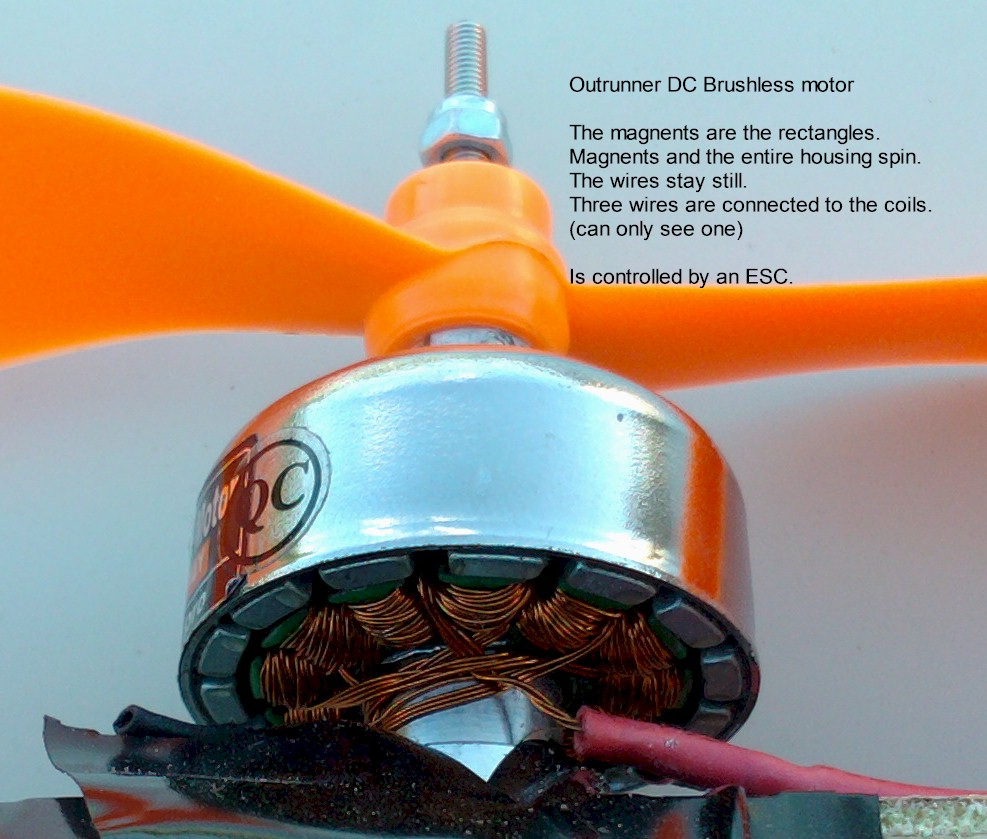

Today: where does \( \mathbf{u} \) come from? Thrust, torque, and mixing — closing the loop on the model.
The handoff we set up today:
the controller returns a wrench \([T,\tau_x,\tau_y,\tau_z]\); the simulator
mixes it into 4 motor thrusts and saturates them. Get the mixer right and every later week works.
Today · 3 hours
Session plan
Clock
Segment
00:00
Recap + aircraft handout (props stay OFF)
15′
00:15
Block A — rotor physics: thrust, drag torque, the X-frame
35′
00:50
Concept check + mixer widget
10′
01:00
Block B — allocation, saturation & the full nonlinear model
30′
01:30
Break
10′
01:40
Lab briefing
10′
01:50
Lab session: mixer, trim, and your first look at (A,B)
Write the X-frame mixing matrix mapping 4 motor thrusts → wrench \([T,\tau_x,\tau_y,\tau_z]\).
Assemble the full nonlinear model and trace the data flow: controller → wrench → mixer → saturated motors → dynamics.
Lab Build & invert the X-frame mixer; confirm hover allocates four equal thrusts and wrench round-trips.
Mental picture first
From your number to actual lift: five links
quadsim hands you the last box only. The four boxes to its left are where hardware surprises live.
We command thrust in newtons, not throttle percent — a deliberate abstraction that keeps the physics clean.
The price: everything between (PWM resolution, ESC protocol, motor lag, battery sag) is invisible in simulation and very visible on the aircraft.
Where the abstraction is honest.
Over one control period the chain is well approximated by a first-order lag plus a static map. That is why simulation results transfer at all — and why they transfer with slightly lower gains.
Mental picture first · the real actuator
What is actually bolted to each arm

A brushless outrunner: the whole bell (with magnets) spins around the wound stator. No brushes to wear, huge torque for its 30 g. Photo: 1sfoerster, Wikimedia Commons, CC BY-SA 3.0.
The command chain: firmware writes a duty cycle → the ESC switches three phases → the motor spins → the propeller makes thrust. Four copies of this chain are the actuator suite.
Each link adds delay: the chain behaves like a first-order lag, time constant \( \tau_m \approx 20\text{–}80 \) ms on small quads.
quadsim hides the chain and lets you command thrust \( f_i \) directly — a deliberate simplification whose price we will name today, and pay in Week 5's tuning.
The actuator · drawn
Everything a rotor gives you
One knob (Ω), two effects: thrust you want, reaction torque you either cancel (pairing) or spend (yaw).
Your turn (60 s) — hover thrust per motor is 1.59 N at Ω₀. To get 10% more thrust, does Ω rise by 10%? (No — √1.1 ≈ 4.9%: the quadratic map means small speed changes move thrust a lot. This is why fine hover control is even possible.)
The actuators
One rotor: thrust up, drag torque about z
Thrust along +body-z: \( f_i = k_f\,\omega_i^2 \) — quadratic in speed.
Model motors by thrust \(f_i\) directly; yaw torque \( = \pm c f_i \), \( c = k_m/k_f \).
Two CW + two CCW → drag cancels at hover; deliberate imbalance = yaw control.
Why alternating spin?
If all four spun the same way, the airframe would yaw uncontrollably from net reaction torque.
Alternating CW/CCW zeroes it at hover and turns the residual into the \(\tau_z\) you command.
One level deeper
Where \( k_f \) comes from — aerodynamics, then a kitchen scale (the kffit widget)
Definition (propeller coefficients).
Dimensional analysis gives \( f = C_T \rho\, n^2 D^4 \) and \( \tau_d = C_Q \rho\, n^2 D^5 \) (\(n\) rev/s, \(D\) diameter). For a fixed prop at low speed, \( C_T, C_Q \) are nearly constant — collapse everything into \( f = k_f\,\Omega^2 \), \( \tau_d = k_q\,\Omega^2 \), and note \( c = k_q/k_f \) has units of metres (our 0.016 m).
Worked example (static thrust test — the instructor's bench, shown in Week 5).
Aircraft held on a scale, one motor at a set speed. Scale reads \( 162 \) g ⇒ \( f = 1.59 \) N at \( \Omega = 800 \) rad/s:
\[ k_f = f/\Omega^2 = 1.59 / 800^2 \approx 2.5\times10^{-6}\ \mathrm{N\,s^2} \]
Repeat at 3–4 speeds; fit the square law; the fit quality tells you where the model ends (battery sag bends it at high throttle).
Remark (what we neglect, knowingly).
In forward flight the advance ratio changes \(C_T\) (translational lift); near the ground, thrust rises (ground effect, below ~1 rotor diameter); descending fast into your own wake costs thrust (vortex ring). None are in quadsim's nominal model; drag is in the Week-10 team plant, hidden. Naming them now is what lets you diagnose them then.
The identification, drawn
Fitting \( k_f \) with a kitchen scale
Four measurements, one square law, one honest boundary where battery sag bends the curve.
(90 s) — The bench reads 162 g at one speed. What fraction of \( f_{max} \) is that, and how much headroom does a 4-motor aircraft have at hover? (1.59 N of 4 N = 40%; total 6.4 N of 16 N ⇒ thrust-to-weight 2.5, i.e. 1.5 g of spare acceleration.)
One level deeper · interactive
Fit it yourself — drag the bench points
Predict before you compute. Which single point, moved, changes k_f most? (Guess before dragging: the square law weights high-Ω points far more.) Then fake battery sag on the top two and describe the residual pattern.
Why thrust is quadratic in \( \Omega \) — momentum theory in one slide
1the rotor accelerates a column of air downwardsPhysical picture: lift is the reaction to throwing air down. Nothing else is happening.
2mass flow \( \dot m = \rho A v_i \), induced velocity \( v_i \propto \Omega \)Both the amount of air and its speed rise with rotor speed — the air column is swept faster and pushed harder.
3\( f = \dot m \, \Delta v \propto (\rho A v_i)(v_i) \propto \Omega^2 \)Two factors of \( \Omega \) ⇒ the square law. Not an empirical fit — momentum conservation.
4torque: \( \tau_d \propto \rho A v_i^2 \, r \propto \Omega^2 \), same orderDrag torque scales identically, so the ratio \( c = \tau_d/f \) is nearly constant — which is exactly the assumption that lets the mixer be a constant matrix.
The consequence for control.
At hover (\( f = 1.59 \) N) a 1% speed change gives a 2% thrust change: \( df/f = 2\, d\Omega/\Omega \). The square law is a gain multiplier — good for authority, and the reason ESC resolution near hover matters.
Where it fails.
Momentum theory assumes still air and no blade stall. In fast forward flight, descent into your own wake, or near a wall, \( k_f \) shifts. Named in Week 2's omissions table; observable in Week 10.
Geometry · the hazard
X-frame: every motor rolls AND pitches
+x (forward)
▲
f3 ◜ │ ◝ f4 X-frame: arms at 45° to the body axes.
(CCW) │ (CW) Each motor sits at (±l, ±l) → it has a
───────┼───────► +y moment arm on BOTH the x (pitch) and
f2 ◟ │ ◞ f1 y (roll) axes. No motor is "pure roll".
(CW) │ (CCW)
⚠ Convention hazard. Most free references — MathWorks NMPC, Bresciani,
Gibiansky — give the plus-frame matrix (roll uses only motors 2&4, pitch only 1&3).
Our course is X-frame: relabel/re-derive or you will wire the wrong mixer. See CONVENTIONS.md.
Geometry · drawn
The X-frame, with the numbers you must not mix up
quadsim's exact convention — m1 rear-right ↻, m2 front-right ↺, m3 front-left ↻, m4 rear-left ↺. Label your team aircraft's motors to match, this week.
Derivation · click to advance interactive
Building the mixer row by row
1total thrust: \( T = f_1 + f_2 + f_3 + f_4 \)All four push the same way (along body-z), so thrust is a plain sum. Row 1 is all ones.
2roll: \( \tau_x = l\,(-f_1 - f_2 + f_3 + f_4) \)Right pair versus left pair. Each motor sits \( l \) from the axis in the X-frame convention; the signs are read straight off the geometry drawing.
3pitch: \( \tau_y = l\,(f_1 - f_2 - f_3 + f_4) \)Rear pair versus front pair. Same distances, different grouping — the two torque rows are orthogonal, which is what makes roll and pitch independent.
4yaw: \( \tau_z = c\,(-f_1 + f_2 - f_3 + f_4) \)CW pair versus CCW pair, and \( c = 0.016 \) m is a drag ratio, not a lever arm. Ten times smaller than \( l \) — the numerical statement of yaw's weakness.
5stack: \( \mathbf u = M\mathbf f \), with \( M \) constant and invertibleFour equations, four unknowns. Constant because the geometry never changes; invertible because the four rows are independent. Invert once at startup, use forever.
The four rows are mutually orthogonal — which is why, inside the limits, you can ask for roll without disturbing thrust. Outside the limits, that promise breaks (two slides on).
The core equation
The X-frame mixer \( \mathbf{M} \)
With arm \(l\) and torque ratio \(c\), the 4 motor thrusts \(f_i\) map to the wrench by:
Rows 2–3 (\(\tau_x,\tau_y\)): \(\pm l\) on every motor — the X-frame signature.
Row 4 (\(\tau_z\)): \(\pm c\) follows the CW/CCW pattern.
This is exactly params.mixer_matrix().
The controller returns a wrench; the sim inverts \(\mathbf{M}\) (allocation_matrix) and
clips each \(f_i\) to \([f_{\min},f_{\max}]\).
Going the other way
Allocation: wrench → motors
The controller speaks in wrench; the motors need thrusts. Invert the mixer:
Hover check. A pure-thrust wrench \( \mathbf{u}=[\,mg,0,0,0\,]^\top \) must allocate to
four equal motor thrusts \( f_i = mg/4 \). If yours doesn't, a sign in \(\mathbf{M}\) is wrong.
Saturation is nonlinear. Once a motor clips at \(f_{\max}\), the realized wrench no longer
equals \(\mathbf{u}\) — the controller has lost authority. We watch log.f for this later.
In quadsim: wrench_to_motor_forces(u, p) = allocation_matrix() @ u then np.clip.
Column 1 is all \( 1/4 \): a thrust request splits evenly. Obvious, but confirms the algebra.
Columns 2–3 carry \( 1/(4l) = 1.47 \): a 1 N·m roll request costs ±1.47 N per motor.
Column 4 carries \( 1/(4c) = 15.6 \): the same 1 N·m in yaw costs ±15.6 N per motor — ten times more.
Read the danger.
Hover leaves ~2.4 N of headroom per motor. So the largest clean yaw torque is \( 2.4/15.6 \approx 0.15 \) N·m, versus \( 2.4/1.47 \approx 1.6 \) N·m in roll.
Yaw saturates ten times sooner. Every 'my quad won't hold heading in wind' report traces to this column.
Worked example · by hand
A wrench request, all the way to four numbers
Ask for: hover thrust plus a gentle roll. \( \mathbf u = (6.38,\; 0.20,\; 0,\; 0) \).
Base: \( 6.38/4 = 1.595 \) N to every motor.
Roll: \( 0.20 \times 1.47 = 0.294 \) N, subtracted from motors 1–2, added to 3–4.
\( \mathbf f = (1.30,\; 1.30,\; 1.89,\; 1.89) \) N.
Check limits: all inside \( [0,4] \) ✓ — the wrench is delivered exactly.
Now break it.
Same roll request at low thrust, \( T = 1.5 \) N: base \( 0.375 \), so \( \mathbf f = (0.08, 0.08, 0.67, 0.67) \) — still legal, barely.
Push to \( \tau_x = 0.5 \) N·m: \( \mathbf f = (-0.36, -0.36, 1.11, 1.11) \). Negative thrust is impossible. Two motors clamp to zero, and the delivered roll drops to 0.33 N·m while thrust rises to 2.2 N.
You asked for roll and got roll and a climb.
(3 min) — Repeat with \( T = 12 \) N (near full throttle) and \( \tau_x = 0.5 \). What clamps now, and what does the aircraft do instead? (The upper pair hits \( f_{max} \) ⇒ delivered roll shrinks and thrust falls — the mirror failure. Authority is highest in the middle of the throttle range, which is why hover is a comfortable place to control from.)
Interactive · drag the sliders
The allocation, live — and where it breaks
Find a request the motors cannot honour.
Reading a datasheet
Motor \( K_v \), propeller pitch, and what they promise
Spec
Means
Our aircraft
Effect on control
\( K_v \) [rpm/V]
no-load speed per volt
≈4300
sets \( \Omega \) range for a given pack
prop \( D \times P \)
diameter × pitch, inches
≈3×2
\( k_f \propto D^4 \) — diameter dominates
cells (S)
pack voltage \( \approx 3.7\text{V} \times S \)
3S ≈ 11.1 V
\( \Omega_{max} = K_v \times V \)
C rating
max current \( = C \times \) capacity
≥25C
low C ⇒ voltage sag ⇒ thrust sag
Put the numbers together.
\( \Omega_{max} \approx 4300 \times 11.1 = 47{,}700 \) rpm no-load, maybe 60% of that loaded ≈ 3000 rad/s.
With \( k_f = 2.5\times10^{-6} \): \( f_{max} \approx 2.5\times10^{-6} \times 3000^2 \)… which overshoots reality, because \( k_f \) itself falls as the motor loads up. This is why we measure rather than compute.
Datasheets size the aircraft; the scale calibrates it. Both are needed, and only one of them is trustworthy for control design.
Detail, done properly
Thrust-to-weight: the one ratio that sets the aircraft's character
Attitude authority comes from the same headroom — which is why aggressive climbs and aggressive rolls compete for one budget.
T/W
Character
Typical
1.2–1.5
sluggish, long endurance
survey, agriculture
2–3
balanced — ours
photography, teaching
4–8
aerobatic
racing, freestyle
<1.1
cannot climb meaningfully
overloaded; a warning sign
(2 min) — Your team clips on a 100 g payload. New T/W? Hover throttle? (\( m = 0.75 \) kg ⇒ T/W = 2.2, hover throttle ≈ 46%. Still comfortable — but the spare acceleration fell from 1.5g to 1.2g, and every controller gain you tuned is now facing a different plant. This is mission M3.)
Detail, done properly
Where the energy goes — and how long you can hover
Momentum theory's induced power: \( P_i = \dfrac{T^{3/2}}{\sqrt{2\rho A}} \) — note the \( 3/2 \) power: doubling mass costs 2.8× the power.
Real rotors add profile drag: total \( P \approx P_i / \mathrm{FM} \), figure of merit \( \mathrm{FM} \approx 0.5\text{–}0.7 \) for small props.
Hover time \( \approx \dfrac{E_{battery} \times \text{usable}}{P} \).
Our aircraft, honestly.
Disc area \( A = 4 \times \pi(0.038)^2 \approx 0.018 \) m². With \( T = 6.38 \) N: \( P_i = 6.38^{1.5}/\sqrt{2 \times 1.225 \times 0.018} \approx 77 \) W. With FM = 0.6 ⇒ \( P \approx 128 \) W.
A 3S 1300 mAh pack holds \( \approx 14 \) Wh; at 80% usable ⇒ ≈ 5 minutes of hover.
That five minutes is your lab session's real constraint — and why the tethered F570 demonstration aircraft, with its 1.75 h endurance, is such a useful teaching tool.
Bigger propellers move more air more slowly for the same thrust — which is why efficient aircraft look ungainly and racing quads do not. The \( \sqrt{A} \) in the denominator is the whole story.
One level deeper · interactive
Hover power — momentum theory with sliders
Predict before you compute. Prediction: if you double the propeller diameter, does hover power halve, quarter, or fall by √2? And what does +20 % mass cost in power — 20 %, 31 %, or 44 %?
Q1 — Why do diagonal motor pairs (m1+m3 vs m2+m4) spin in opposite directions?
Yaw torque balance.Each prop's aerodynamic drag torque reacts on the airframe; opposite pairs cancel it at hover. Yaw control is then differential drag — tiny (c = 0.016 m vs l = 0.17 m), which is why yaw is every quad's weakest axis. Check the row scales in M.
Q2 — At hover each motor pushes ~1.59 N (f_max = 4 N). Roughly how much roll torque is available without touching total thrust?
±0.8 N·m-ish: shift up to ~2.4 N across the roll pair → τ ≈ 2×2.4×0.17.The exact number matters less than the habit: control authority is a budget readable off the mixer — and it shrinks as T approaches 0 or 4f_max. Your Wk-5 gains must live inside this budget.
One level deeper · what real autopilots do
When the request doesn't fit: desaturation is a policy
The inverse mixer can demand \( f_i < 0 \) or \( f_i > f_{max} \). Clamping per-motor silently edits your wrench — which axis gets sacrificed is then an accident.
Better: decide the sacrifice by design. The standard priority: keep roll/pitch torque (a tilted quad falls), then thrust, then yaw (annoying, not fatal).
Mechanism: if a motor would exceed its limit, shift all four thrusts equally (moves only T), and scale back \( \tau_z \) first — exactly what PX4's airmode desaturation does.
Worked example.
Request at low throttle: \( T = 2.0 \) N, \( \tau_x = 0.5 \) N·m ⇒ \( f = [\,-0.24,\ -0.24,\ 1.24,\ 1.24\,] \) N (from the widget). Naive clamp to 0 delivers τx = 0.42 N·m and raises T to 2.48 N — you commanded roll, got roll and a climb. Priority desaturation instead raises all four by 0.24 N first: T = 2.96 N, but τx delivered exactly. Both are compromises; only one is a chosen compromise.
The thing that ruins estimators
Vibration, aliasing, and where you bolt the IMU
Each rotor at \( \Omega \approx 800 \) rad/s excites the frame at \( \approx 127 \) Hz — plus blade-passing harmonics.
The IMU samples at, say, 1 kHz. A 127 Hz vibration is in band; a 1200 Hz harmonic aliases down and appears as a slow, fake motion.
Fake motion enters the estimator, the controller reacts, the motors change speed, the vibration changes — a closed loop through the airframe.
The three defences.1. Mechanical: soft-mount the flight controller; balance propellers (a 0.1 g imbalance is visible in the traces). 2. Anti-alias: analogue low-pass before sampling — no digital filter can undo aliasing after the fact. 3. Digital: notch filters tracking rotor speed, standard in modern firmware.
This is the physical reason behind Week 5's fix #5 (filtered derivative), and behind the advice to stop raising \( K_d \) when the motors start to hiss. The noise is not abstract — it is your propellers, arriving through the frame.
Concept check
Three questions before the lab
Q1 — You swap to propellers of 20% larger diameter, same motors. What happens to hover throttle and to your Week-5 gains?
\( k_f \) rises roughly as \( D^4 \) (≈2×), so hover throttle drops sharply — and the plant gain seen by your controller doubles.Every gain you tuned is now effectively twice as hot. Changing propellers is changing the plant; retune, do not hope.
Q2 — Two motors are wired so that motors 1 and 2 both spin CW (instead of 1 and 3). Roll and pitch still work on the bench. What fails, and when?
Yaw — completely.The drag torques no longer cancel at hover, so the aircraft yaws constantly and \( \tau_z \) commands fight a standing bias. Roll and pitch look fine, which is exactly why this bug survives the bench and shows up on the first flight.
Q3 — At hover your controller asks for \( \tau_z = 0.3 \) N·m. Is that a reasonable request?
No — it needs ±4.7 N per motor, far beyond the 2.4 N of headroom.The mixer will clamp and deliver perhaps a third of it, while disturbing thrust. Yaw commands must be scaled to the \( 1/(4c) = 15.6 \) reality, not to roll intuition.
Putting it together
The full nonlinear model
With the wrench in hand, the rigid-body dynamics (z-up / ENU, gravity \(-z\), thrust \(+\)body-\(z\)) are:
\(R\) is the body→world matrix for intrinsic ZYX Euler \((\phi,\theta,\psi)\); \(W(\boldsymbol\eta)\)
maps body rates → Euler-rates. State \(\mathbf{x}=[\,\mathbf p,\mathbf v,(\phi,\theta,\psi),\boldsymbol\omega\,]\in\mathbb{R}^{12}\).
The wrench \([T,\boldsymbol\tau]\) is the only way a controller touches this model.
In the simulator
Round-trip: wrench → motors → wrench
import numpy as np
from quadsim import QuadParams
from quadsim.dynamics import wrench_to_motor_forces, motor_forces_to_wrench
p = QuadParams()
u = np.array([p.weight, 0.0, 0.0, 0.0]) # hover: thrust only, no torque
f = wrench_to_motor_forces(u, p) # allocation_matrix() @ u, then clip
print(f.round(3)) # -> [1.594 1.594 1.594 1.594] (= mg/4)
u_back = motor_forces_to_wrench(f, p) # mixer_matrix() @ f
print(np.allclose(u_back, u)) # -> True (round-trips when unsaturated)
Hover thrust per motor \(= mg/4 = 0.65\cdot 9.81/4 \approx 1.59\,\)N — far below \(f_{\max}=4\,\)N (≈2.5× headroom).
Beyond four rotors
Why the same matrix runs hexacopters, and what changes
Configuration
Rotors
Mixer shape
What it buys
Quad X (ours)
4
4×4, square, invertible
simplest; a rotor failure is fatal
Hexacopter
6
4×6, wide ⇒ infinitely many solutions
pseudo-inverse picks one; survives one rotor loss
Octocopter
8
4×8
redundancy, heavy lift; used in cinema and agriculture
Tilt-rotor / omni
4–8 + servos
full 6-DOF wrench
can hold attitude and translate independently — no longer underactuated
The pseudo-inverse, in one line.
When \( M \) is wide, \( \mathbf f = M^\top (MM^\top)^{-1}\mathbf u \) gives the minimum-energy solution among all that deliver the wrench. Redundancy becomes an optimisation — the first appearance of a theme that owns Weeks 7 and 11.
Why we still teach the quad.
Every idea transfers unchanged: the wrench, the allocation, the saturation trade. Only the matrix's shape differs. Learn it on four rotors and a hexacopter costs you an afternoon.
Take-home set
Six problems — solutions posted Friday
Derive \( M \) for a plus-frame quad (motors on the axes, not between them). Which rows change, and why is the X-frame preferred in practice?
Compute \( M^{-1} \) numerically for our parameters and verify \( MM^{-1} = I \) to machine precision.
For \( T \in \{2, 6.38, 12\} \) N, find the largest \( \tau_x \) deliverable without saturation. Plot authority against thrust and explain the shape.
A motor fails (\( f_3 = 0 \) permanently). Show the remaining system cannot hold both attitude and yaw, and identify which axis you would sacrifice.
Using momentum theory, estimate how \( k_f \) changes at 2000 m altitude (\( \rho \) drops ~18%). What happens to hover throttle?
Propose a desaturation priority for an agricultural sprayer (heavy, slow) and for a racing quad, and justify each in two sentences.
Question 3's plot is worth doing properly — it is the single most useful figure for understanding why your controller behaves differently at different throttle settings.
Code walkthrough
\( \texttt{params.py} \) — every number the simulator believes
@dataclass
class QuadParams:
mass: float = 0.65 # kg ← your scale
g: float = 9.81
inertia: np.ndarray = (2.3e-3, 2.3e-3, 4.0e-3) # kg·m² ← bifilar test
arm: float = 0.17 # m ← ruler
k_torque:float = 0.016 # m ← drag/thrust ratio
f_min: float = 0.0 # N ← props only push
f_max: float = 4.0 # N ← static thrust test
dt: float = 0.005 # s (200 Hz)
def mixer_matrix(self): # [T; tau] = M @ f
l, c = self.arm, self.k_torque
return np.array([[ 1, 1, 1, 1],
[-l,-l, l, l],
[ l,-l,-l, l],
[-c, c,-c, c]])
Eight numbers define the aircraft. Six of them your team will measure in the next three weeks.
\( f_{min} = 0 \) is not a formality: it is the physical fact that fixed-pitch propellers cannot pull, and it is half of every saturation story.
The team's job, concretely.
Replace the defaults with your aircraft's values and re-run every lab. Your controller then flies your vehicle in simulation — which is what makes the Week-10 sim-vs-real comparison meaningful rather than decorative.
Worked example · design, not analysis
Size an aircraft for a 500 g payload
Requirement: carry 500 g, hover 8 minutes, T/W ≥ 2. Work it in the order a designer would.
Mass budget. Payload 500 g + airframe/electronics ≈ 400 g + battery (unknown) ⇒ start at \( m \approx 1.2 \) kg and iterate.
Thrust needed. \( T_{hover} = 11.8 \) N; T/W 2 ⇒ \( 4f_{max} \ge 23.6 \) N ⇒ \( f_{max} \ge 5.9 \) N per motor.
Power. Larger props for efficiency: 8-inch (\( A = 4\times\pi(0.10)^2 = 0.126 \) m²). \( P_i = 11.8^{1.5}/\sqrt{2(1.225)(0.126)} \approx 73 \) W; FM 0.65 ⇒ \( P \approx 112 \) W.
Battery. 8 min at 112 W = 15 Wh usable ⇒ ≈19 Wh pack ⇒ 4S 1300 mAh ≈ 200 g. Consistent with the assumed budget — iteration converged.
Check the control consequence. \( I \) roughly quadruples versus our teaching quad (bigger arms, more mass) while torque authority rises similarly — so attitude bandwidth lands in the same ballpark, but everything is slower and less forgiving.
The lesson.
Note what happened: the same eight parameters, re-solved. Aircraft design is not a different subject from aircraft modelling — it is the same model, read backwards. And the last step is the one engineers skip and regret: what does this do to the controller?
Detail, done properly
Prop guards, ducts, and what they cost you
Our teaching aircraft (and the F570 demonstrator) fly with full-perimeter guards. That is a safety requirement indoors, not a styling choice.
Aerodynamically, a close-fitting duct helps: it suppresses tip vortices and can add 5–15% static thrust for the same power.
Mechanically, it hurts: guards add mass at large radius, so \( I_{zz} \) and \( I_{xx} \) rise by the parallel-axis theorem — agility falls quadratically with guard radius.
The trade, numerically.
20 g of guard at 0.12 m radius adds \( \Delta I \approx 4 \times 0.005 \times 0.12^2 \approx 2.9\times10^{-4} \) kg·m² — roughly +13% on \( I_{xx} \).
Same torque, 13% less angular acceleration ⇒ your attitude loop's \( \omega_n \) drops ~6%. Small, real, and a good reason to re-identify \( \mathbf I \) after fitting guards, not before.
Safety hardware changes the plant. That sentence is worth remembering in general: every physical modification is a modelling event.
One level deeper
Rotor drag: the term that quietly damps your quadrotor
A rotor moving sideways through the air experiences an in-plane force — H-force or rotor drag — roughly proportional to horizontal speed:
It acts like a velocity damper the model does not contain.
Typical magnitude: a few percent of thrust at moderate speeds — small, but it is a stabilising effect.
Why it matters that we omit it.
Your simulated quadrotor is slightly less damped than the real one. So a controller tuned in quadsim is, if anything, conservative when it meets the aircraft — the error is in the safe direction.
The reverse case is the dangerous one: models that flatter the plant (extra damping, no lag, no noise) produce controllers that fail on contact with reality. Know which way your model errs.
Summary of the model chain
From four numbers to twelve derivatives
Weeks 2 and 3 together: the mixer turns four motor commands into a wrench; the wrench drives the two Newton–Euler halves; attitude couples rotation into translation.
You command
Mixer gives
Physics gives
Week
\( f_1..f_4 \) [N]
\( T, \boldsymbol\tau \)
\( \dot{\mathbf v}, \dot{\boldsymbol\omega} \)
3 + 2
(subject to \( 0 \le f_i \le 4 \))
(exactly, if unsaturated)
(twelve derivatives)
—
The model is now complete. Next week we ask what it looks like near hover — and discover why it cannot be left alone.
The idea worth stealing
Control allocation is a pattern, not a quadrotor trick
We split the problem in two: a controller decides what wrench it wants; an allocator decides which actuators deliver it.
The controller never learns how many rotors exist. Swap the airframe, swap \( M \), keep the controller.
This is the same pattern as a car's traction control (torque request → four wheels), a ship's thruster allocation, and a satellite's reaction-wheel distribution.
Why the split pays.
It turns one hard 12-state, 4-input problem into two easy ones: a physics problem (allocation, solved once by a matrix) and a control problem (which now sees clean, orthogonal inputs). Most good engineering is a well-chosen interface, and this is the course's first one.
You will meet the interface again in Week 12, when MPC produces a wrench and the same mixer consumes it, unchanged.
Detail, done properly
Rotor spin-up: the actuator has its own dynamics
Rotors have inertia \( J_r \). Commanding a new thrust means accelerating a spinning disc:
Typical \( \tau_m \): 20–80 ms for small props, more for large ones.
Deceleration is usually slower than acceleration — the motor can push but only drag can slow it. Asymmetric, and rarely modelled.
What it costs at the crossover.
Your attitude loop will run near \( \omega_n \approx 13 \) rad/s. A 40 ms lag contributes \( \arctan(13 \times 0.04) \approx 27^\circ \) of phase lag right where the loop is most sensitive.
Phase margin is finite; 27° of it is now spent before your controller does anything. This is the quantitative reason hardware gains land below simulation gains — a claim you will verify yourself in Week 9.
Worked example · read a real log
Spotting saturation without being told
The symptom in the data.
During an aggressive Week-9 manoeuvre a team's log shows:
• commanded \( \tau_x \): smooth, 0.6 N·m peak • measured roll rate: flattens mid-manoeuvre • altitude: dips 0.3 m at the same instant • two motor channels: pinned at their limits
The diagnosis, in order.
1. Motors pinned ⇒ the mixer clamped. 2. Roll rate flattening ⇒ delivered \( \tau_x \) < commanded. 3. The altitude dip is the tell: clamping redistributed thrust, so the axes coupled — precisely the widget's lesson.
Conclusion: not a tuning problem. An authority problem: the manoeuvre asked for more than the aircraft owns. Fix by limiting the reference (Week 9) or by respecting limits inside the optimiser (Week 11) — not by raising gains.
Learning to read 'the aircraft ran out of authority' from a log — rather than reflexively retuning — is one of the more valuable habits this course can leave you with.
Concept map
Week 3, in one page
The geometry sets M; M turns four scalars into a wrench; the wrench is what Weeks 5–12 will command.
Concept
One-line statement
Where it returns
\( f = k_f\Omega^2 \)
momentum theory, not a fitted curiosity
Wk 5 (gain scaling), hardware ID
drag torque \( = c f \)
yaw is a by-product of lift
every yaw-authority complaint
mixer \( M \)
geometry, frozen into a matrix
Wks 5–12, unchanged
allocation \( M^{-1} \)
wrench → motors
the controller's last step, always
saturation
the hard nonlinearity
Wk 5 (fixes), Wk 11 (MPC's raison d'être)
Looking ahead
Next week: the model meets its own instability
You now have \( f(\mathbf x, \mathbf u) \) and the map from motors to \( \mathbf u \). The aircraft is fully described.
Next week we ask a narrower question: near hover, what does this model look like to a control engineer?
The answer — a set of integrator chains with no restoring force — is what makes every remaining week necessary.
Bring to Week 4: your hand-derived mixer matched to params.mixer_matrix(), and the kffit widget's fit to the instructor's bench data. We will put the fitted \( k_f \) into the linearisation and see what it changes.
The instructor's aircraft
Real identification data from the F570 demonstrator
PWM
Thrust, 1 motor
Thrust, 4 motors
150
0.007 N
3 g
400
0.098 N
40 g
700
0.284 N
116 g
1000
0.490 N
200 g
1250
0.637 N
260 g
1500
0.735 N
300 g
What the table tells you.
Vendor's fit, thrust \( x \) in newtons: \[ \mathrm{PWM} = 3481x^3 - 3864x^2 + 2774x + 156 \]
Aircraft mass 195 g \( \Rightarrow \) hover needs 1.91 N total, 0.478 N per motor \( \Rightarrow \) PWM ≈ 990, about 66% of the range.
Thrust-to-weight \( = 2.94/1.91 \approx \textbf{1.54} \) — modest by design. A tethered teaching platform does not need to be aerobatic, and low T/W makes it far more forgiving to stand next to.
Note this is a PWM → thrust map, not \( \Omega \to \) thrust: the vendor calibrated the entire command chain end-to-end, which is exactly the pragmatic move when you cannot measure rotor speed.
(2 min) — At hover the aircraft sits at PWM 990 of 1500. How much roll authority does that leave, in newtons? (Upward: 0.735 − 0.478 = 0.257 N per motor. Downward: 0.478 N. Roughly symmetric — which is why 66% is a well-chosen hover point.)
The aircraft in this room
Two mixers, two motor numberings — and why it matters
F570 firmware.
Motors 1, 3 counter-clockwise; 2, 4 clockwise — the opposite pairing. \[ u_2 = \tfrac{\sqrt2}{2} b\,(-f_1 + f_2 + f_3 - f_4) \]
with half-diagonal \( b = 0.09 \) m, so the effective arm is \( b/\sqrt2 = 0.0636 \) m.
Both are correct. Neither is more right — they are different labellings of the same aircraft.
Mixing them is catastrophic. A controller written against one convention, flashed onto the other, produces positive feedback on roll: the aircraft flips within 0.2 s of arming.
This is precisely why Week 3's milestone says memorise the motor numbering, and why every real flight-test programme has a props-off polarity drill before the first arming.
The transferable habit.
When you adopt someone else's firmware, the first thing to verify is not the gains — it is the geometry convention: motor order, spin directions, axis signs, and Euler sequence. Four checks, ten minutes, and they prevent the most expensive class of first-flight failure.
Second half · hands-on
Now you build it
Open the Week 3 lab sheet → compute per-motor hover thrust \(mg/4\).
Build the X-frame mixer \(\mathbf{M}\) by hand and invert it.
Confirm the round-tripwrench → motors → wrench and that hover allocates four equal thrusts.
Deliverable: the mixer matrix + the hover-allocation check. graded graded.